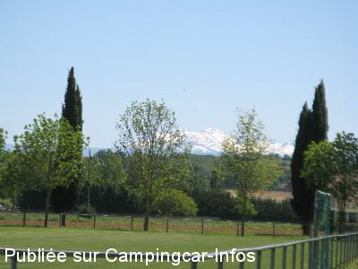
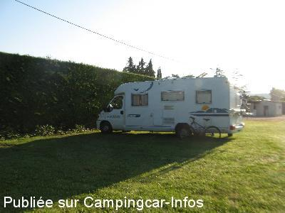

ASN = Aire de services avec stationnement nuit possible de :
BELPECH
(N° 122)
Accès/adresse :
Rue du Stade
11420 BELPECH
11420 BELPECH
Latitude : (Nord) 43.19859° Décimaux ou 43° 11′ 54′′
Longitude : (Est) 1.74515° Décimaux ou 1° 44′ 42′′
Tarif : Gratuit
Type de borne : Autre
Services :


Restauration
Autres informations :
Plusieurs emplacements sur aire communale
Tel Mairie : +33 (0)468 606 015

Le 03/11/2014 par pounet

Le 03/11/2014 par Pounet
de
collomb
le 27/07/2013 :
Un grand merci a la municipalité pour ces deux jours passés sur cette aire, calme avec tout le confort. Merci encore
Un grand merci a la municipalité pour ces deux jours passés sur cette aire, calme avec tout le confort. Merci encore
de
ccmidipy
le 07/06/2011 :
De passage pour la nuit le 1er Juin. Aire très agréable et très calme. De la place pour plusieurs CC (et non pas un seul comme mentionné ci-dessus). Tout fonctionne parfaitement. Merci à la ville pour cet accueil. CCaristes jouez le jeu et faites marcher les petits commerces !
De passage pour la nuit le 1er Juin. Aire très agréable et très calme. De la place pour plusieurs CC (et non pas un seul comme mentionné ci-dessus). Tout fonctionne parfaitement. Merci à la ville pour cet accueil. CCaristes jouez le jeu et faites marcher les petits commerces !
de
bouligny
le 07/03/2009 :
Merci à la commune, une nuit tranquille, tous services gratuits. C'est rare, nous avons apprécié les villageois très accueillants. A voir.
Merci à la commune, une nuit tranquille, tous services gratuits. C'est rare, nous avons apprécié les villageois très accueillants. A voir.
de
Max
le 07/11/2008 :
Pas de W.C. publics....Mais les W.C. du stade sont à 10 mètres
Pas de W.C. publics....Mais les W.C. du stade sont à 10 mètres
de
del
le 18/09/2008 :
Un peu compliqué à trouver car indiqué dans un seul sens! Mais aire agréable & spacieuse. Eau, vidange et électricité gratuits, tranquille à condition qu'il n'y ait pas d'activité sur le stade!!
Un peu compliqué à trouver car indiqué dans un seul sens! Mais aire agréable & spacieuse. Eau, vidange et électricité gratuits, tranquille à condition qu'il n'y ait pas d'activité sur le stade!!